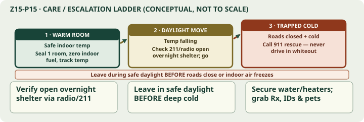

Z15-P15 · Disaster scenarios · New manuscript
Transition safely to community warming centers when winter home heat fails
Move household occupants cleanly to public heated facilities before indoor cold causes hypothermia or frozen roads prevent exit.
When it applies · Multi-day winter blackouts or furnace failures where home indoor temperatures drop toward unsafe levels.
Equipment · Local 211 / county emergency-management shelter listings, pre-packed go-bags, prescriptions, pet transport plan, and safe winter vehicle.

Actions
- Monitor county emergency management, local AM/FM radio, or dial 211 (where active) as soon as a prolonged winter outage begins so you know exact community warming-center addresses, hours (daytime vs overnight), accessibility features, and pet policies BEFORE nightfall.[U17, D10, D14]
- Trigger departure proactively during safe daylight if indoor temperatures trend steadily downward toward unsafe cold (especially with infants, older adults, or medically fragile occupants) rather than waiting for midnight emergencies.[U17, D10]
- Shut off home space heaters/stoves, protect water lines if freezing is imminent, pack medications/chargers/warm bedding/IDs, and check in with your out-of-area relay upon arrival.[U17, U10, D14]
Failure recognition · Waiting until indoor temperature hits 36°F at 2 a.m. in a blizzard only to find the nearest daytime library warming center closed at 6 p.m.[U17, D10]
Verify · Confirm shelter hours/overnight status verified, roads passable, home shutoffs secured, and medications/IDs/pets accounted for.[U17, D14, D17]
Stop or change course · If impassable blizzard roads make driving unsafe while indoor heat fails and life safety is threatened, call 911 for coordinated emergency rescue rather than driving into whiteouts.[D10, U17]
Evidence and editorial notes
- D10 · FEMA / Ready.gov · Winter Weather (current web edition)
- Section: Blizzards, Ice Storms, and Multi-Day Freezing Blackouts · Conditions: Blizzard Warnings, Ice Storm Warnings, and extreme wind-chill emergencies
Support: Complete supply, fuel, and medication staging before storm onset, stay off snow/ice-closed roads, prepare safe non-combustion warmth consolidation indoors, keep vents/exits clear of snowdrifts, and evacuate to community warming shelters early if indoor heat fails.
Limitations: Ice storms down overhead power lines and trees simultaneously, delaying utility restoration for days across wide areas. · Conflicting evidence: None; connects Z15 winter disaster response with Z12/Z13.
Editorial note: Grounds winter-storm travel halts and warming-center transitions. · Specialist reviewer: Cold-weather emergency management
Primary source · checked 2026-11-24 - D14 · FEMA / Ready.gov · Evacuation (current web edition)
- Section: Household Evacuation Logistics, Go-Bags, and Shelter Registration · Conditions: Mandatory or voluntary evacuations across multi-hazard disasters
Support: Pre-pack grab-and-go kits (medications, IDs, water, warm layers, chargers, pet gear), maintain at least two independent route options out of the neighborhood, notify out-of-area contacts upon departure, and register status through official shelter/Red Cross Safe & Well channels.
Limitations: GPS navigation apps can route evacuees onto flooded, smoke-blocked, or closed secondary roads; follow live law-enforcement and DOT closures. · Conflicting evidence: None; operationalizes T13 into household evacuation execution.
Editorial note: Core evacuation execution and accountability evidence in Z15. · Specialist reviewer: Emergency management and transportation safety
Primary source · checked 2026-11-24 - D17 · FEMA / Ready.gov · Prepare Your Pets for Disasters (current web edition)
- Section: Pet, Service-Animal, and Vulnerable-Member Accountability · Conditions: Households with pets, service animals, children, older adults, or access/functional needs
Support: Include leashes, carriers, vaccination records, pet food/water, and pet-friendly shelter lists in household evacuation plans—never leave pets chained or trapped behind; coordinate explicit buddy assignments for children, older adults, and mobility/power-dependent household members.
Limitations: General public Red Cross shelters always admit service animals under ADA rules, whereas companion pets often require separate co-located or pet-friendly shelters. · Conflicting evidence: None; complements T10 disability planning.
Editorial note: Ensures complete household and vulnerable-group accountability in Z15. · Specialist reviewer: Accessible emergency management and animal welfare
Primary source · checked 2026-11-24 - U10 · FEMA / Ready.gov · Winter Weather (current web edition)
- Section: Winter Household Resilience > Frozen Pipes, Ice Dams, and Heating Loss · Conditions: Sub-zero Upper Midwest winter outages and prolonged cold snaps
Support: Prevent burst pipes by insulating exposed lines, keeping cabinet doors open, shutting off and draining water lines per plumbing guidance if indoor temperatures drop toward freezing, and consolidating household occupants into one safe insulated interior room.
Limitations: Draining hydronic boilers or gas water heaters requires exact manufacturer/plumber steps to prevent equipment damage or gas leaks. · Conflicting evidence: None; regionalizes winter home defense for Minnesota conditions.
Editorial note: Anchors winter pipe protection, thermal-zone consolidation, and abandonment thresholds. · Specialist reviewer: Residential plumbing, HVAC, and cold-weather emergency management
Primary source · checked 2026-11-24 - U17 · FEMA / Ready.gov · Evacuation (current web edition)
- Section: Household Evacuation Thresholds When Utilities Fail · Conditions: Uninhabitable indoor temperatures, sewage backup, persistent CO alarm, or structural/utility hazard
Support: Establish clear pre-agreed exit triggers to relocate to a warming center, hotel, or relatives BEFORE indoor freezing, carbon monoxide alarms, medical-device battery exhaustion, or impassable blizzard roads trap occupants.
Limitations: Waiting until indoor pipes burst or batteries hit zero removes safe travel options. · Conflicting evidence: None; aligns with T13 and E14.
Editorial note: Defines objective household abandonment thresholds in Z13. · Specialist reviewer: Emergency management and cold-weather operations
Primary source · checked 2026-11-24
Source lineage · FEMA Winter Weather and Evacuation; new manuscript · Classification · New manuscript.